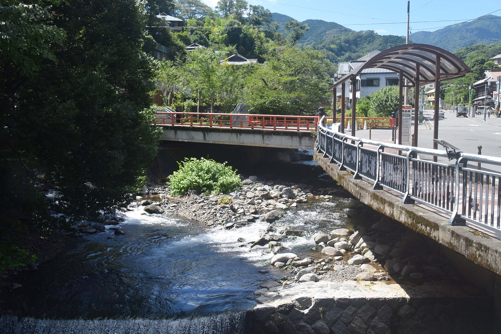

制作中のたたき台です（2026-11-17）。料金・写真・文言は、まだ確定していません。
小田急・相鉄・横浜市営地下鉄が集まる湘南台駅から、歩いて2分。駐車場は250台、最大8時間まで無料です。
イラスト：車でお越しの方へ。駐車場は250台、最大8時間まで無料です。
湘南台は3つの路線が集まる駅です。新宿からも、横浜からも、藤沢・江ノ島の方からも、乗り換えなしで来られます。
駅の西口を出て、ウエストプラザの方へ。歩いて2分です。
湘南台ウエストプラザの駐車場（ライオンパーキング／イルカパーキング）をお使いいただけます。
館内で何をお使いになったかで、無料の時間が延びます。らくのご利用で3時間、百年ダイニングで2,000円以上お使いいただくと5時間、リラクゼーションコーナーで6時間、プレミアムラウンジとリラクゼーションの両方で最大8時間まで無料です。
湘南台ウエストプラザの駐輪場をお使いいただけます。自転車は3時間ごと100円、原付は3時間ごと200円です。
第3月曜の休館をのぞいて、24時間あいています。仕事帰りでも、終電を逃した夜でも、朝風呂だけでも、いつでもどうぞ。
湯につかって泊まり、朝風呂に入ってから出かけられます。湯の出どころである奥湯河原も、小田急で行ける先です。

京急で横浜へ出て、横浜市営地下鉄ブルーラインに乗り換えると湘南台まで一本です。所要時間と終電は、ご利用の前にお確かめください。
横浜または新宿で乗り換えます。
空港からの所要時間と、深夜の到着にそなえた行き方は、確かめ次第ここに載せます。
湘南台駅の西口からバスが出ています。
藤沢まで小田急で、江ノ島までもそのまま行けます。
バスの系統・所要時間は、確かめ次第ここに載せます。
もう一軒の、らく。相模原市・2027年春 開業予定
同じ奥湯河原の湯で、相模大野にもう一軒。2027年春に開きます。